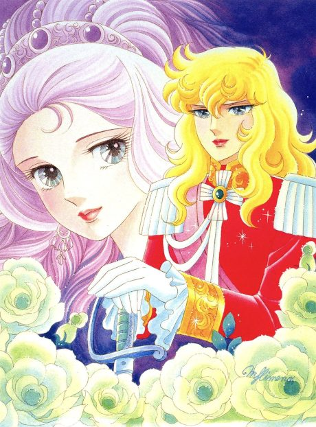
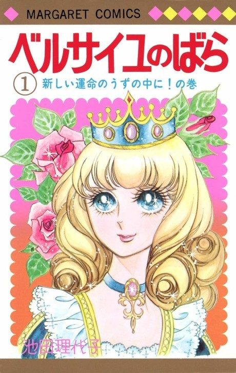
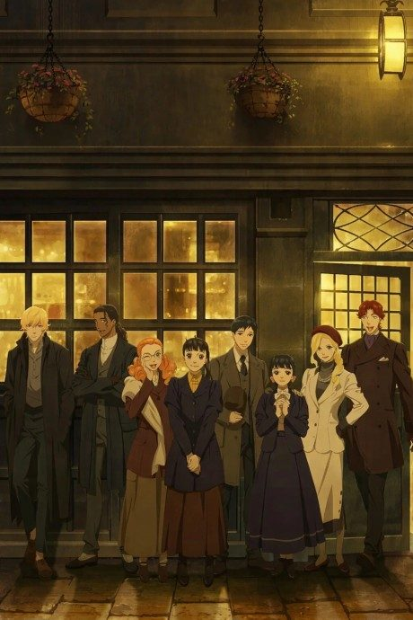
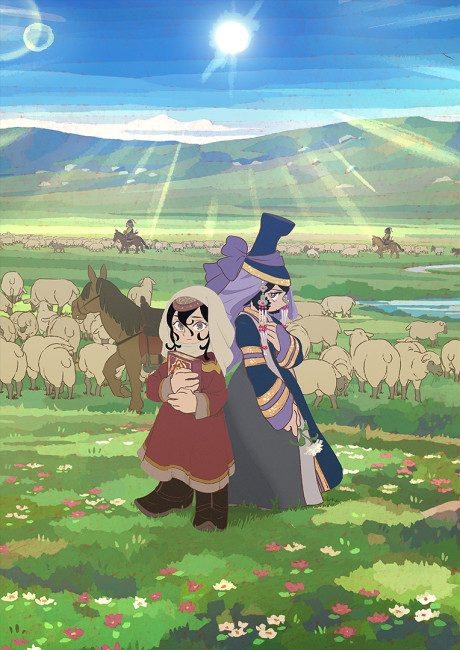
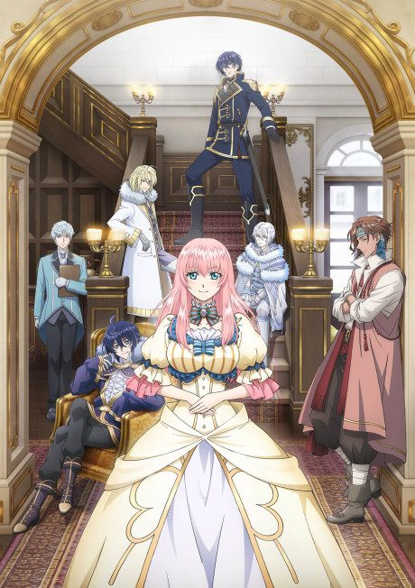

Anime
MangaLady Oscar: The Rose of Versailles
ベルサイユのばら
The anime takes the story to Unclear.
8.1AniList
—Animeter
40 epEpisodes
Is it worth pushing through?
Built from what visitors report across all 40 episodes.
Loading reports…Checking what other people said about this one.
Sign in above with your email to add your report.
More like Lady Oscar: The Rose of Versailles
 Manga Ch. 1018.7
Manga Ch. 1018.7
 Unclear7.3
Unclear7.3

Original8.4
Unclear8.3
Manga Ch. 317.5 Unclear8.1
Unclear8.1